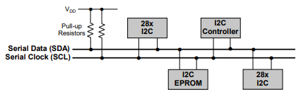
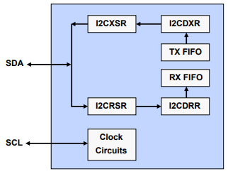
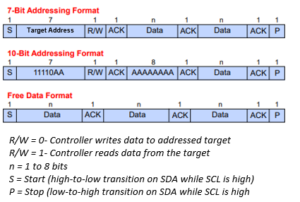
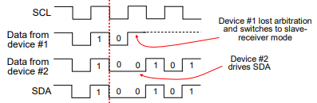

Inter-Integrated Circuit (I2C)#
I2C is a popular serial communication protocol used for low-speed communication between between devices that connect using an I2C-bus and are compliant with I2C-bus specification version 2.1 such as microcontrollers and peripheral devices such as sensors, EEPROMs, and other ICs.
How does it work?#
The I2C module in C2000 devices consists of two bidirectional data lines SDA (Serial Data) and SCL (Serial Clock)

External components attached to the 2-wire serial bus can transmit or receive 1 to 8-bit data to or from the device through the I2C module.
The I2C module also has a control register that enables or disables the I2C module and sets the I2C communication parameters, such as the bus speed, addressing mode, and data format.
I2C Features#
Phillips I2C-bus specification compliant, version 2.1
Data transfer rate from 10 kbps up to 400 kbps
Each device can be considered as a Controller or Target
Controller initiates data transfer and generates clock signal
Device addressed by Controller is considered a Target
Multi-Controller mode supported
Standard Mode - send exactly n data values (specified in register)
Repeat Mode - keep sending data values (use software to initiate a stop or new start condition)
Block Diagram#

I2C Operating Modes#
The I2C module supports both controller and target modes of operation.
Operating Mode |
Description |
|---|---|
Responder-Receiver Mode |
Module is a target and receives data from a controller (all targets begin in this mode) |
Responder-Transmitter Mode |
Module is a target and transmits data to a controller (can only be entered from target-receiver mode) |
Controller-Receiver Mode |
Module is a controller and receives data from a target (can only be entered from controller-transmit mode) |
Controller-Transmitter Mode |
Module is a controller and transmits to a target (all controllers begin in this mode) |
In controller mode, the C2000 device can act as a controller and initiate communication with a target device by sending a start condition followed by the slave address and the desired operation (read or write). The I2C module will then transfer the data between the controller and the target devices over the SDA and SCL lines.
In target mode, the C2000 device can respond to requests from a controller device by sending and receiving data over the I2C bus. The target address can be set either by hardware pins or software configuration, and the I2C module will respond to the corresponding address.
I2C Serial Data Formats#

I2C Arbitration#
The arbitration procedure is invoked if two or more controller-transmitters simultaneously start transmission
Procedure uses data presented on serial data bus (SDA) by competing transmitters
First controller-transmitter which drives SDA high is overruled by another controller-transmitter that drives SDA low
Procedure gives priority to the data stream with the lowest binary value

I2C Summary#
Compliance with Philips I2C-bus specification (version 2.1)
7-bit and 10-bit addressing modes
Configurable 1 to 8 bit data words
Data transfer rate from 10 kbps up to 400 kbps
Transmit FIFO and receive FIFO
Resources#
Feedback
Please provide any feedback you may have about the content within C2000 Academy to: c2000_academy_feedback@list.ti.com